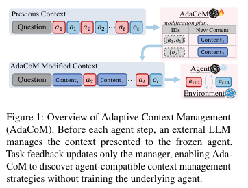
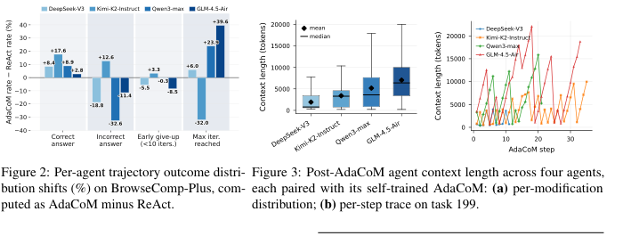
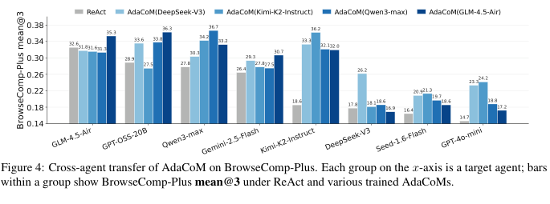
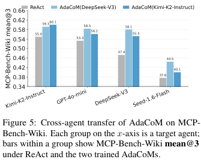
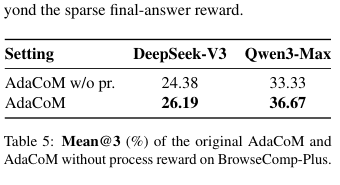
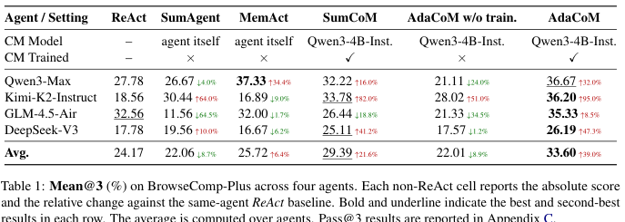
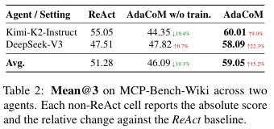
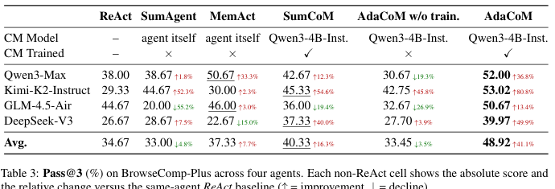
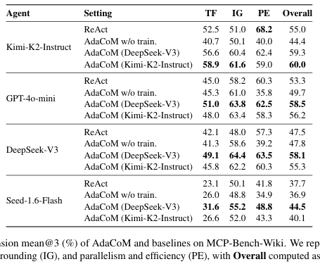

Learning Agent-Compatible Context Management for Long-Horizon Tasks
这篇论文提出 AdaCoM：不训练底层 agent，而训练一个外部 LLM context manager，在每个 agent step 前用可重写、删除、合并的 JSON 修改动作整理运行上下文。核心结论不是“越短越好”，而是 Fidelity-Reliability Trade-off：强 agent 更需要高保真保留 raw trajectory，弱 agent 更依赖激进压缩来保持可靠推理。
1. 研究动机：长程 agent 的瓶颈不只是 context window 不够大
长程 web search 和 deep research agent 会把 tool results、intermediate reasoning、失败查询和候选证据不断追加到上下文。随着任务变长，stale 或 irrelevant content 会淹没关键证据，引入 position bias，并导致 constraint forgetting、premature abandonment 和 redundant exploration。论文要解决的问题是：在不改动、不可训练甚至闭源的 agent 上，是否能学习到和每个 agent 兼容的 context management 策略。
Agent-side 管理的部署缺口
SumAgent、MemAct、ReSum 等路线通常要求 agent 自己遵守 summary 或 pruning tool 的新协议。论文认为这在闭源 agent 或多 agent 部署中不现实，因为每个底层 agent 都可能需要不同训练或适配。
固定 summarization 不够兼容
固定摘要策略隐含 one-size-fits-all：它可能帮弱 agent 降低干扰，却会让强 agent 丢掉可利用的细粒度证据。Table 1 中 SumCoM 提升 Kimi/DeepSeek，但让 GLM 明显下降。
AdaCoM 的关键假设
context management 应该由外部 manager 学习，并在 operation level 保持灵活：可删除、重写、合并，也可不改。训练信号来自任务结果和过程奖励，而不是预先规定“必须总结”。
2. 数学表示、建模与算法流程
AdaCoM 把 frozen agent、environment 和外部 manager 组合成一个 MDP。manager 只改变 agent 看到的 context，不改变 agent 参数。它学习的不是单一 summarizer，而是一组结构化 context edit actions。

2.1 Vanilla ReAct 与 AdaCoM workflow
Vanilla ReAct 在第 $t$ 轮维护追加式上下文：
$$c_t^{\mathrm{vanilla}}=(q,a_1,o_1,\ldots,a_t,o_t),\qquad a_{t+1}\sim A(c_t^{\mathrm{vanilla}}).$$AdaCoM 使用 managed context $\tilde c_t$。初始 $\tilde c_0=(q)$。在第 $t$ 轮，agent 先基于上轮管理后的上下文行动，environment 返回 observation：
$$a_t\sim A(\tilde c_{t-1}),\qquad c_t=\mathrm{Append}(\tilde c_{t-1},a_t,o_t).$$manager 根据 prompt $p_t=P(c_t)$ 采样修改动作，并应用到 pre-management context：
$$m_t\sim \pi_\theta(\cdot\mid p_t),\qquad \tilde c_t=\mathrm{Apply}(c_t,m_t).$$Agent acts
冻结的 ReAct-style agent 只读取 $\tilde c_{t-1}$ 并发出 tool call 或 final answer。
Append observation
环境返回 $o_t$，系统把新 action-observation pair 追加成 $c_t$。
Manager edits
Qwen3-4B-Instruct manager 输出 JSON modifications，目标是保持 task-critical 信息。
Next step
下一轮 agent 看到 $\tilde c_t$，而不是无界增长的原始轨迹。
2.2 Flexible modification action space
每轮 pre-management context 被表示为带唯一 message IDs 的有序消息列表。manager action 是结构化操作列表：
$$m_t=[\delta_t^{(1)},\delta_t^{(2)},\ldots,\delta_t^{(n_t)}].$$每个 $\delta_t^{(j)}$ 包含四个字段：$ids^{(j)}$ 选择目标消息；$role^{(j)}\in\{\mathrm{SYSTEM},\mathrm{USER},\mathrm{ASSISTANT}\}$ 指定输出角色；$justification^{(j)}$ 是 manager 的修改理由，但不会展示给 agent；$new\_content^{(j)}$ 是替换内容，空字符串表示删除。未命中的消息原样复制，空列表表示不修改。
2.3 Reward 与 two-level advantage
每条 rollout $\tau_i=((p_{i,1},m_{i,1}),\ldots,(p_{i,T_i},m_{i,T_i}))$ 有终局 outcome reward $R_i$，每个 manager step 有过程奖励总和 $Q_{i,t}$。论文先分开标准化任务级和步骤级信号：
$$A_i^R=\frac{R_i-\mu_R}{\sigma_R+\epsilon},\qquad A_{i,t}^Q=\frac{Q_{i,t}-\mu_Q}{\sigma_Q+\epsilon}.$$二者组合后再次在 group 内标准化：
$$A_{i,t}=A_i^R+\alpha A_{i,t}^Q,\qquad \hat A_{i,t}=\frac{A_{i,t}-\mu_A}{\sigma_A+\epsilon}.$$manager 用 GRPO/PPO-style clipped objective 优化 token-level 修改动作：
$$J(\theta)=\mathbb{E}\left[\frac{1}{Z}\sum_{i,t,u}\min\left(r_{i,t,u}(\theta)\hat A_{i,t},\bar r_{i,t,u}(\theta)\hat A_{i,t}\right)\right].$$其中 $\bar r_{i,t,u}(\theta)=\mathrm{clip}(r_{i,t,u}(\theta),1-\epsilon,1+\epsilon)$，$Z=\sum_{i=1}^{G}\sum_{t=1}^{T_i}|m_{i,t}|$。
过程奖励来自轨迹本身
论文使用 token penalty、redundant-action penalty、format penalty。BrowseComp-Plus 额外使用 gold-doc-found 和 key-doc-found reward，把成功检索到关键文档归因给前一步 context management。
Fidelity-Reliability Trade-off
保留 raw trajectory 可保持证据 fidelity，但超过某个 agent 的 effective context length 后会降低 reasoning reliability。压缩越激进越可靠，但越可能丢失细节。
3. 实验设计与复现细节
实验覆盖 web search 和 deep research 两类长程任务。作者分别训练 target-agent-specific AdaCoM，并做 cross-agent transfer。底层 agent 全部 frozen，manager backbone 固定为 Qwen3-4B-Instruct。
BrowseComp-Plus
- 任务：受控 corpus 上的 multi-constraint web search。
- Split：680 training / 150 test。
- Tools：
search(query, top_k)和get_document(doc_id)。 - Retriever：Qwen3-Embed-8B。
- Max iterations：35。
- Judge：GPT-4o (2024-11-20)，binary correctness。
- Metrics：mean@3 和 pass@3。
MCP-Bench-Wiki
- 任务：Wikipedia MCP server 上的 deep research。
- Tools：9 个 Wikipedia MCP tools，覆盖 search、article retrieval、summary、facts、links、sections。
- Judge：Claude Opus 4.6。
- 核心维度：task fulfillment (TF)、information grounding (IG)、parallelism and efficiency (PE)。
- Overall score：$0.4\mathrm{TF}+0.4\mathrm{IG}+0.2\mathrm{PE}$。
- Final datasets：4,740 SFT samples、1,000 RL tasks、150 test tasks。
Baselines
ReAct、SumAgent、MemAct、SumCoM、AdaCoM w/o training。SumCoM 与 AdaCoM 同为外部 manager，但操作被固定为 summarization，用于隔离 flexible actions 的作用。
训练设置
SFT warm-up 用 GPT-5 (2025-08-07) 生成 BrowseComp-Plus edit trajectories，用 Claude Opus 4.6 生成 MCP-Bench-Wiki trajectories；RL 基于 Trinity-RFT，group size $G=8$。
关键超参
manager context window 32,768 tokens，max output 4,096 tokens；$\alpha=0.1$，rollout batch 32 trajectories，training batch 768 manager steps，learning rate $5\times10^{-6}$，KL coefficient 0.006，PPO clip 0.2。
复现时要注意的上下文窗口差异
ReAct 使用各 agent API 的默认最大 context length：Qwen3-Max 和 Kimi-K2-Instruct 为 256K，GLM-4.5-Air 和 DeepSeek-V3 为 128K。AdaCoM 下由于 manager 只有 32K context budget，agent 的有效输入也被限制在 32K tokens。这意味着 AdaCoM 的提升不是靠更长窗口，而是靠选择性保留。
4. 实验结果与核心结论
主结果支持三个判断：AdaCoM 对不同 frozen agents 更稳定；固定 summarization 和无训练 manager 都不够可靠；manager 的可迁移性受 source-target agent capability 和 reasoning style 共同影响。
| Agent / Setting | ReAct | SumAgent | MemAct | SumCoM | AdaCoM w/o train. | AdaCoM |
|---|---|---|---|---|---|---|
| Qwen3-Max | 27.78 | 26.67 ↓4.0% | 37.33 ↑34.4% | 32.22 ↑16.0% | 21.11 ↓24.0% | 36.67 ↑32.0% |
| Kimi-K2-Instruct | 18.56 | 30.44 ↑64.0% | 16.89 ↓9.0% | 33.78 ↑82.0% | 28.02 ↑51.0% | 36.20 ↑95.0% |
| GLM-4.5-Air | 32.56 | 11.56 ↓64.5% | 32.00 ↓1.7% | 26.44 ↓18.8% | 21.33 ↓34.5% | 35.33 ↑8.5% |
| DeepSeek-V3 | 17.78 | 19.56 ↑10.0% | 16.67 ↓6.2% | 25.11 ↑41.2% | 17.57 ↓1.2% | 26.19 ↑47.3% |
| Avg. | 24.17 | 22.06 ↓8.7% | 25.72 ↑6.4% | 29.39 ↑21.6% | 22.01 ↓8.9% | 33.60 ↑39.0% |
Table 1 重建：BrowseComp-Plus mean@3。AdaCoM 在四个 frozen agents 上均提升 ReAct，平均相对提升 39.0%。Qwen 上 MemAct 略高于 AdaCoM，作者解释为 Qwen 自身 agentic capability 较强，能有效使用 pruning tool，但该优势未泛化到其他 agent。
| Agent / Setting | ReAct | AdaCoM w/o train. | AdaCoM |
|---|---|---|---|
| Kimi-K2-Instruct | 55.05 | 44.35 ↓19.4% | 60.01 ↑9.0% |
| DeepSeek-V3 | 47.51 | 47.82 ↑0.7% | 58.09 ↑22.3% |
| Avg. | 51.28 | 46.09 ↓10.1% | 59.05 ↑15.2% |
Table 2 重建：MCP-Bench-Wiki mean@3。由于 deep research rollout 和 evaluation 成本较高，正文只评估 Kimi 和 DeepSeek 两个代表性 agent。


强 agent：tiered management
GLM 和 Qwen 的 manager 倾向先保留 raw tool results，让上下文增长，再做偶发 batched compression。原因是强 agent 能从细粒度 raw evidence 中获益。
弱 agent：eager distillation
DeepSeek 和 Kimi 的 manager 几乎每轮压缩，维持较短上下文。这样牺牲部分 fidelity，但更能避免长上下文干扰和重复探索。
Transfer 不是只看能力
能力接近是 first-order rule，但修改风格也重要。DeepSeek 偏好 concise key findings 和 document IDs，Kimi 更能利用 detailed search history，Gemini 容易被 report-style memory 带偏。


| Setting | DeepSeek-V3 | Qwen3-Max |
|---|---|---|
| AdaCoM w/o process reward | 24.38 | 33.33 |
| AdaCoM | 26.19 | 36.67 |
Table 5 重建：BrowseComp-Plus 上 process reward ablation。该表只覆盖 DeepSeek-V3 和 Qwen3-Max。
5. Figure / Table 导航
PDF 内嵌图片只抽取到首页的小图元素，因此本页采用渲染页面裁剪来保留关键图表。表格中的关键数字已在上文重建；裁剪图用于快速对照原论文版式。




6. 复现清单
论文附录给出了相对完整的训练、数据构造、tool set、judge prompt 和 AdaCoM prompt，但仍有若干依赖需要从代码仓库或作者实现中确认。本节按可复现路径拆解。
必须准备的组件
- Frozen agents：Qwen3-Max、Kimi-K2-Instruct、GLM-4.5-Air、DeepSeek-V3；transfer 还包括 GPT-OSS-20B、Gemini-2.5-Flash、Seed-1.6-Flash、GPT-4o-mini。
- Context manager：Qwen3-4B-Instruct，SFT warm-up 后用 GRPO 训练。
- RL framework：论文使用 Trinity-RFT；整体 agent workflow 使用 AgentScope。
- Benchmarks：BrowseComp-Plus 与作者构建的 MCP-Bench-Wiki。
- Evaluation judges：BrowseComp-Plus 用 GPT-4o (2024-11-20)，MCP-Bench-Wiki 用 Claude Opus 4.6。
训练与奖励参数
- Group size $G=8$，rollout batch size 32 trajectories，training batch size 768 manager-step samples。
- Learning rate $5\times10^{-6}$，KL coefficient 0.006，PPO clipping range 0.2，无 entropy bonus。
- Manager sampling temperature 1.0，最大 rollout iterations 35。
- 最多训练 40 epochs，eval score 连续 20 rollout steps 不提升则 early stopping。
- SFT warm-up：BrowseComp-Plus 5 epochs，MCP-Bench-Wiki 2 epochs。
Process reward 数值
- Token penalty：-0.8。
- Redundant-action penalty：-0.4。
- Format penalty：-0.5。
- BrowseComp-Plus gold-doc-found：0.6。
- BrowseComp-Plus key-doc-found：0.3。
- Process reward weight：$\alpha=0.1$。
MCP-Bench-Wiki 数据漏斗
上游由 Claude Opus 4.6、Gemini 3.1 Pro、GLM-5、MiniMax M2.7、GPT-5 (2025-08-07) 多模型生成任务，并通过 cross-model evaluation、dry-run validation、log analysis 过滤。最终训练池约 2,517 tasks，部署为 4,740 SFT samples、1,000 RL tasks、150 test tasks。
复现风险与缺口
论文附录给出 prompts 和主要超参，Appendix E 声称 code/data 可公开访问，但本次只下载并解析 PDF，没有运行作者仓库。若要数值级复现，还需确认：BrowseComp-Plus 具体版本、MCP-Bench-Wiki 发布数据、API 模型版本可用性、judge 配置、Trinity-RFT/AgentScope 版本、tokenizer 统计口径，以及各 closed-source agent 的默认 context length 是否仍与论文一致。
7. Reviewer Critique
这篇论文的价值在于把“context management 是否兼容 agent”作为被学习的对象，而不是把 summarization 当成固定工具。但证据仍主要集中在 knowledge-intensive search，且成本和 cache 影响没有被系统优化。
Strengths
- 问题定义很实用：不训练 frozen/closed-source agent，只训练外部 manager。
- action space 比固定 summarization 更通用，能表达 delete、rewrite、merge、no-change。
- 分析不止报分，还解释了 outcome shift、context length strategy 和 transfer pattern。
- Appendix 给出 reward 参数、prompts、dataset construction，复现信息比多数 agent 论文更具体。
Weaknesses
- 主要任务仍是 web/wiki knowledge search，未覆盖 code agents、embodied agents、longform writing。
- MCP-Bench-Wiki 正文只评估两个 agent，transfer 扩展在附录中给出，但仍是同类知识检索任务。
- 每步调用 manager 会增加 token cost 和 wall-clock latency；论文只提出 tiered triggering 方向，没有实测成本收益曲线。
- 修改早期 context 会破坏 KV cache reuse，这对生产 inference system 很关键，但没有 cache-aware 实验。
Missing ablations
- 没有系统比较不同 manager capacity，例如 1B/4B/8B/更强 closed-source manager。
- 没有分离 SFT warm-up 与 RL 的贡献，只明确比较了 w/o training 和 w/o process reward。
- 没有 manager invocation frequency ablation：每步调用 vs threshold trigger vs fixed interval。
- 没有直接量化 information loss，例如被压缩/删除内容中有多少 gold evidence。
Failure modes
- manager 可能把细粒度证据 paraphrase 错，强 agent 原本能利用的 raw evidence 被破坏。
- report-style memory 可能诱导某些 agent 模仿报告格式而不是继续搜索，Gemini case 已显示这种风险。
- 若 benchmark reward 或 judge 偏好短答案，manager 可能学到过度压缩，迁移到需要 exhaustive evidence 的任务时失效。
- 在 multi-agent 或工具状态依赖更强的环境中，删除历史 tool result 可能破坏 action provenance。
8. 对我的研究方向的启发
如果关注 RLVR、agent、自进化、questioner-solver、replay、diversity 和 evaluation，这篇论文最可迁移的点是：把“agent 需要什么样的工作记忆”当成可学习策略，并用过程信号改善长程 credit assignment。
Questioner-Solver 可借鉴
在自进化训练中，不只是生成更难问题，也可以学习 questioner/solver 之间的信息接口：哪些失败轨迹、约束、候选证据应该被保留给下一轮 solver。
Replay 不只重放样本
AdaCoM 的 working note 类似 trajectory-level replay state：保留 rejected candidates、ineffective queries 和 unresolved constraints。这启发 replay buffer 可以存“进展摘要”而不只是原始样本。
Diversity 也有兼容性
transfer 结果说明不同 agent 偏好不同 memory style。设计 diversity/evaluation 时，可能需要衡量样本或轨迹对目标 solver 的兼容度，而不是只看表面覆盖。
可直接尝试的后续实验
- 把 manager action space 改成 replay action space：保留、压缩、删除、提升 priority、生成 counterfactual note。
- 把 Fidelity-Reliability Trade-off 量化为 agent-specific effective context length，用它决定 replay/summary trigger。
- 在 RLVR 中加入 process rewards：重复尝试惩罚、关键证据保留奖励、格式合法性奖励、约束覆盖奖励。
- 做 manager style transfer：同一能力层的 agent 之间迁移工作记忆格式，观察哪些结构会导致 solver 模仿、早停或重复探索。
本页提取说明
本页基于 arXiv v1 PDF 全文与附录生成。图表来自渲染页面裁剪；PDF 内嵌图片抽取只得到首页若干小图元素，因此不是从矢量源直接导出的原始 figure。所有涉及模型版本、代码地址和数据发布状态的表述均按论文文本记录，未额外运行作者代码。